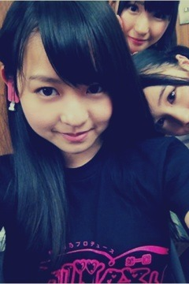

| 2012/06 25 Mon | 168回目*marika |
いつも読んでくださってる方、
初めて読んでくださった方、
コメントしてくださった方、
ありがとうございます。
ゆび祭り アイドル臨時総会
初武道館でした‼
そして初おいシャンでした私
楽しかったーーー‼
乃木坂46は
♪おいでシャンプー
♪ぐるぐるカーテン
今日は勉強になりました。
楽屋のモニターで
他のみなさんの
ライブパフォーマンスを見てましたが
本当にすごい‼
経験が少ないというのもあるけど、、
乃木坂はまだまだだな
と思いました。
アイドルたくさんの楽屋で
密かにわきわきしてました
 うわわ
うわわ
うわわ
いちばんかなが
わきわきしてたけどね
最後、全員で踊ったAKB48さんの
♪ヘビーローテーション
盛り上がった‼
まさか自分がこんなかたちで
ヘビロテ踊るとは思ってなかった。
友達とカラオケで
歌いまくってたもん‼
でもその時は振りを
ちゃんと覚えてなくて
スッキリしてなかったけど、
この機会にしっかり覚えたので
スッキリだーー
ちゃんと歌って踊れるぞーーーむー
とにかく楽しかった

指原さん
こんな素敵な企画を開いてくださって
ありがとうございました＊

ゆび祭りTシャツ
 良い‼
良い‼
良い‼
みなみが私の耳たぶにはねピンを挟む
みなみ「はい!ねっ♪写真撮って
絶対ブログに載せてよね♪」
まりか「え笑」
載せた。
載せたよみなみ‼
さりげなくさゆにゃん、みなみ
写ってるよ‼
*****
昨日の乃木どこ、
感想ありがとうございました。
はい、お金がつがつ使わないように
気をつけます

天才って言われたら
そりゃ食いつくよ‼
嬉しいもん

*****
では明日も元気に頑張りまりか

まりか
コメント(154)
2012/06/25 23:54